FPV RACING GATE / EXPERIMENTAL ITERATION
Paper face, click frame and magnetic clamps
Four identical 2090.4 × 609.6 mm strips. One PVC back. Compare three bracing layouts, reversible joints and diagonal break-apart print stacks.
Open Blender model · Visual study PDF · Assembly and test guide · Download study kit
Preferred trial: mechanical click joints + alternating diagonal webs + magnetic paper pads. Magnets can dominate cost: 336 discs at the pictured spacing. See the guide for wider spacing and magnet-free retention.
Experimental parts, not a production gate kit. Gate rails and full-gate dock sites are schematic. The exact exported interfaces fit the A1 Mini and have been sliced, but physical strength, latch fatigue, magnet grip and PETG stack separation have not been tested. The source picture-frame meshes are reference-only.
Start with the seven-piece D-lug and PVC dock plate
Use plate 05 for the latest concept. A second optional test is the small stack plate. Do not print all 25 variants: they include clearance comparisons and alternative processes.
0.4 mm nozzle, 0.2 mm layers, 3 walls, 15% infill, textured PEI; supports off. No job has been sent to a printer. Source STLs/3MFs: printable folder. Digital checks · Stack findings · Research.
Explore the Blender views
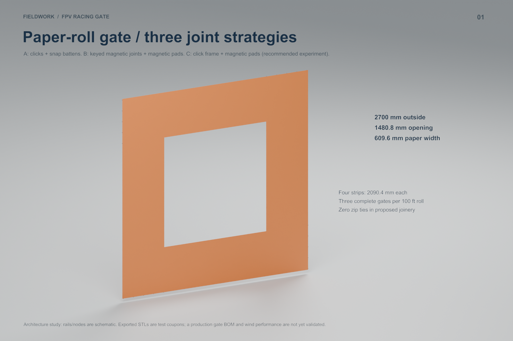
Paper layout and three retention strategies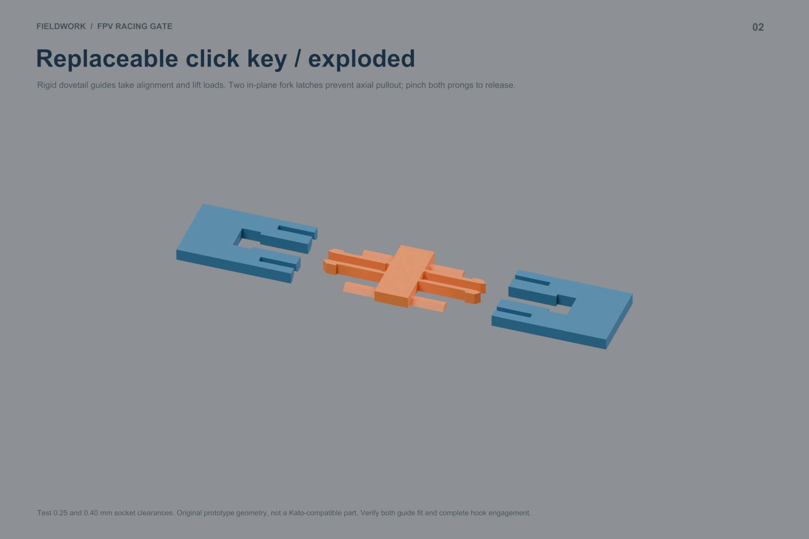
Replaceable click key and clearance samples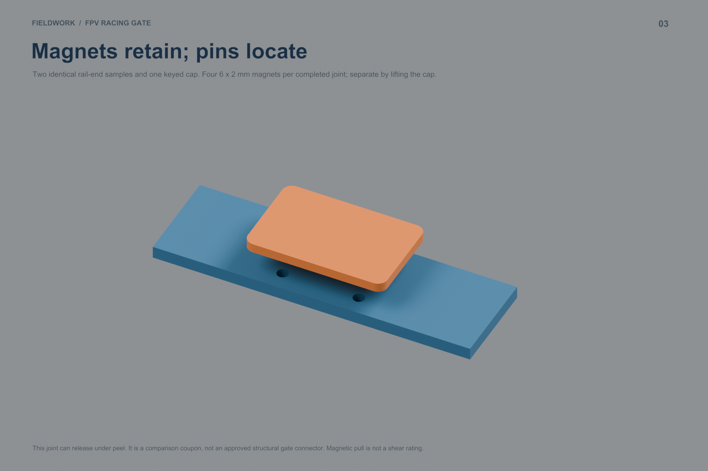
Magnet-held structural splice alternative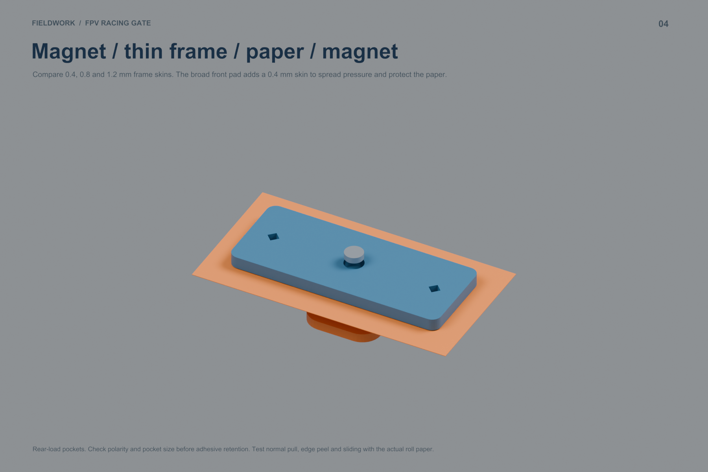
Magnetic paper sandwich and skin thickness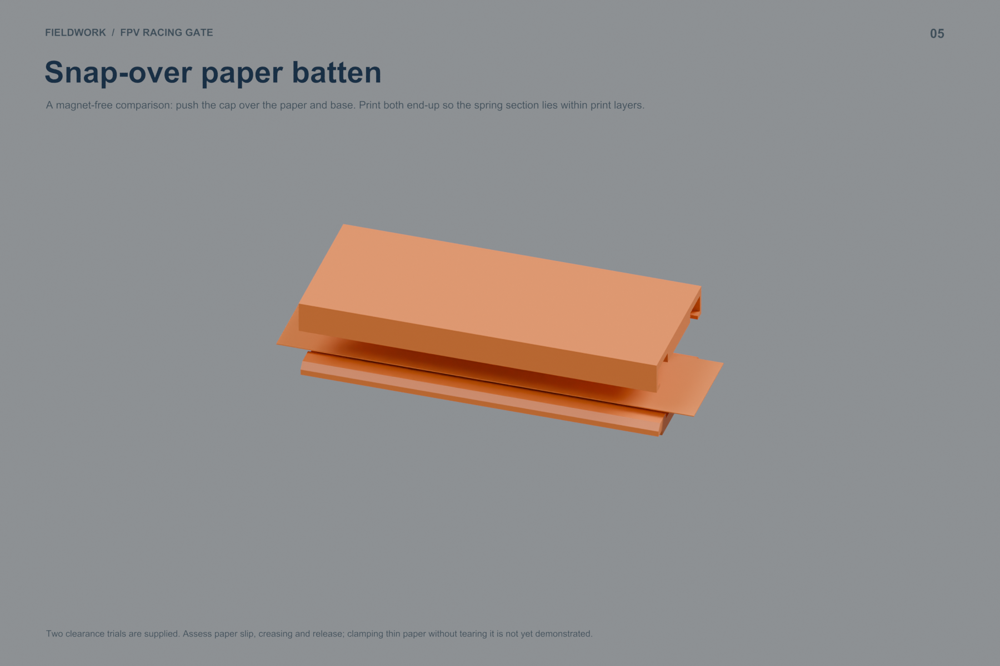
Magnet-free snap-over batten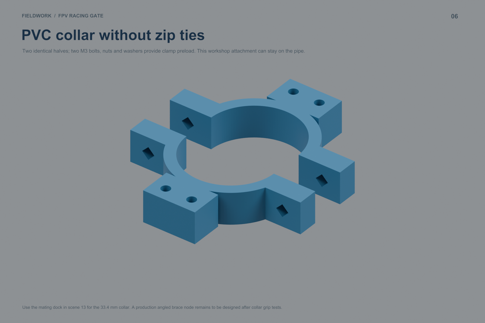
Bolted PVC collar halves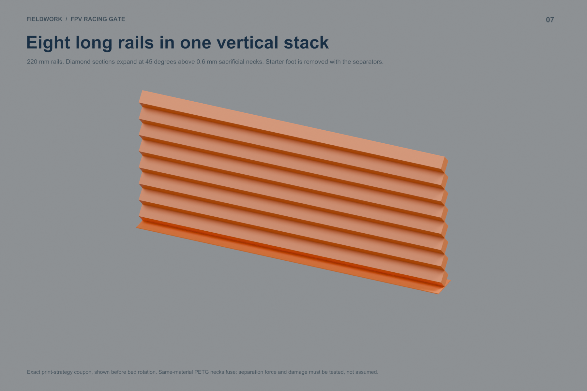
Eight 220 mm rails stacked vertically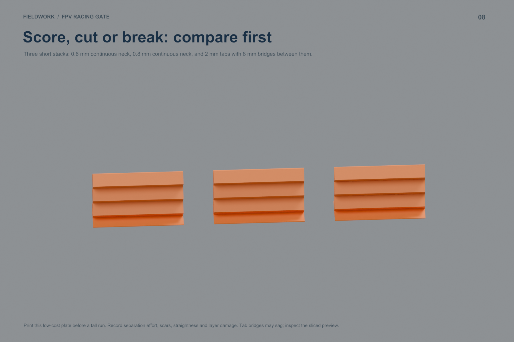
Short separation tests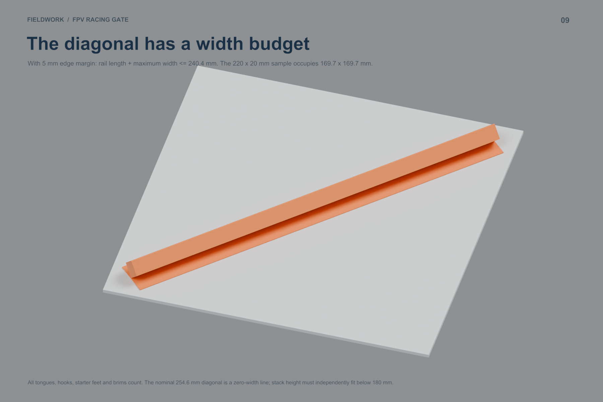
Diagonal bed-fit calculation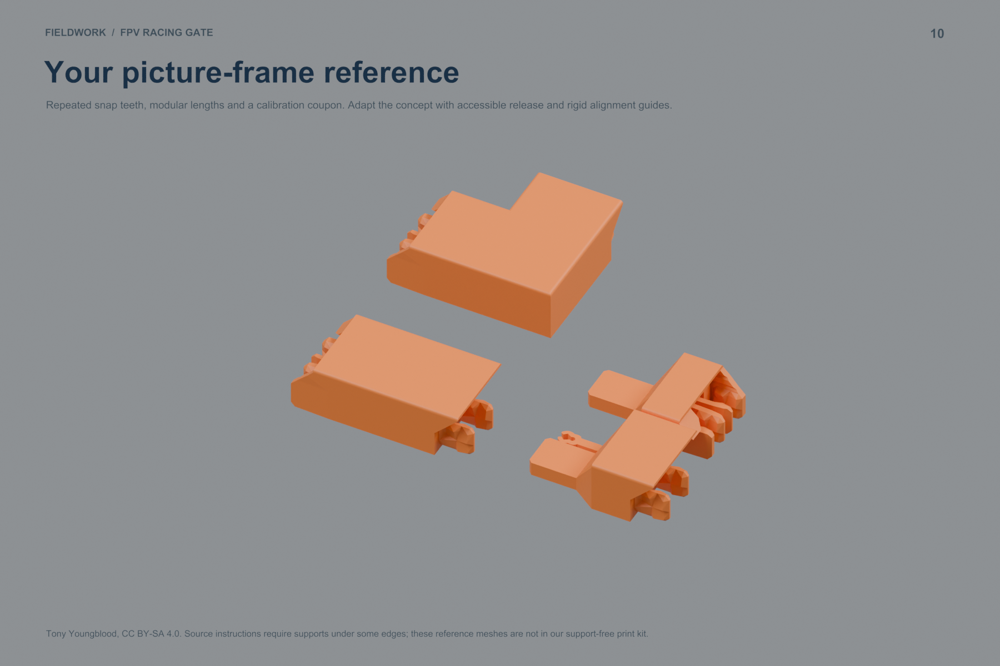
Tony Youngblood picture-frame reference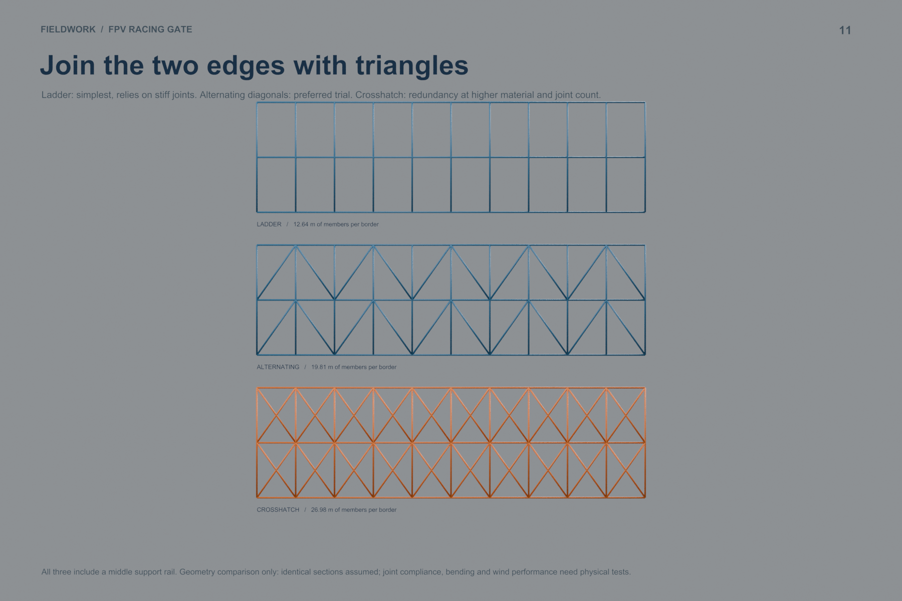
Ladder, alternating diagonals and crosshatch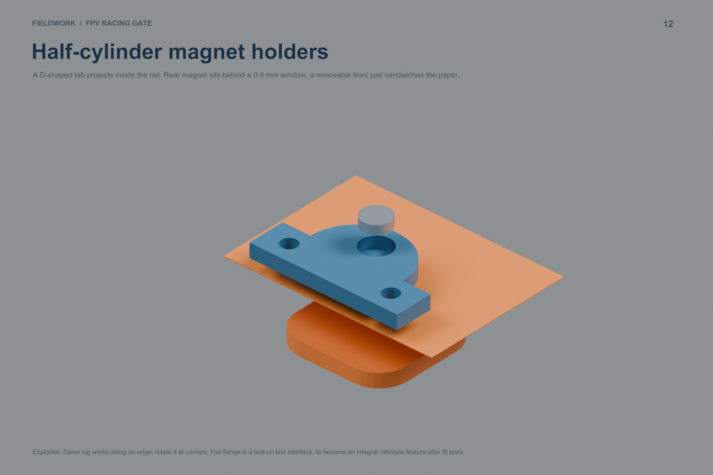
Half-cylinder magnet holder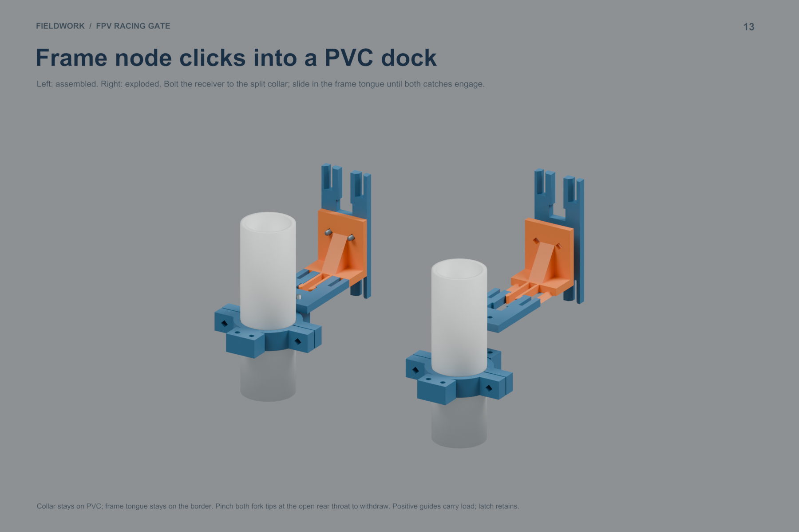
Assembled and exploded PVC quick-release dock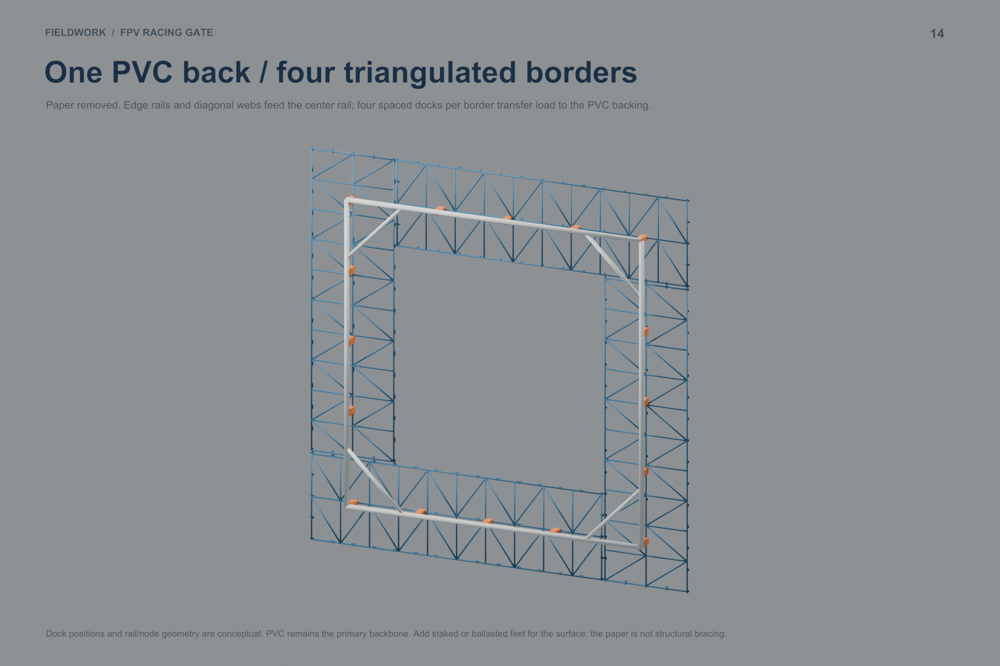
Rear frame, triangulation and proposed docks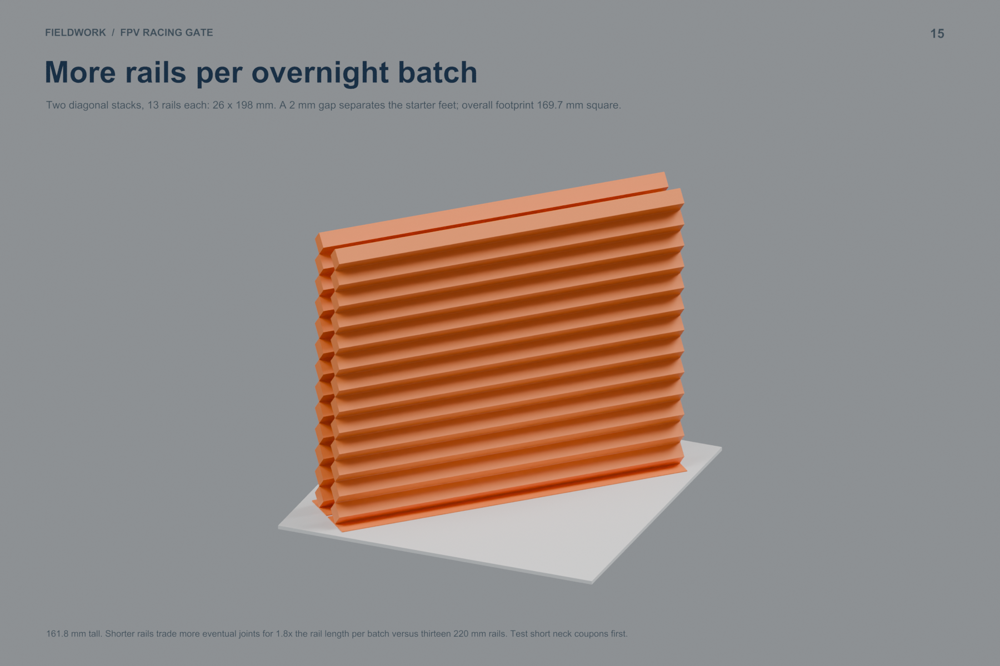
26-rail overnight manufacturing trialBaseline committed as 732f592; new work on iteration/paper-roll-click-magnet. The embedded picture-frame reference is by Tony Youngblood, CC BY-SA 4.0; attribution and license. Test-coupon geometry is newly modeled.